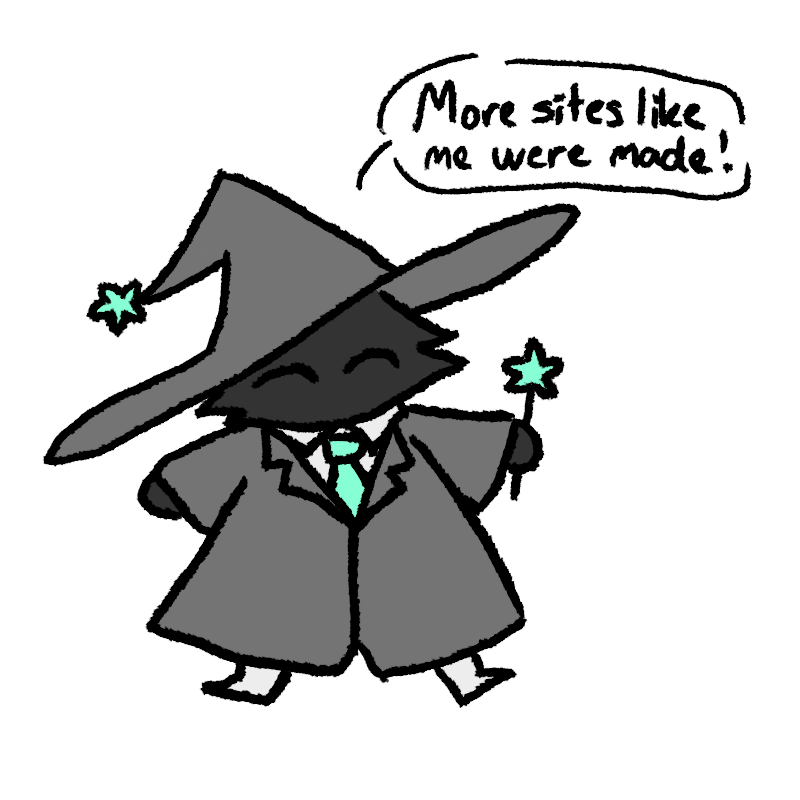

The History of the Internet
Guided by the Wwweb Wizard
By Sara Adams

(1960's)
Special-purpose systems such as SAGE, SABRE, and AUTODIN I were developed
The implementation of the term "Packet" to describe the data in transmission
First sucessful host-to-host communication
(1970's)
This is the protocol for how data can be transmitted and built from any computer to another
Integrates TCP/IP protocols to create dial-up connections
Personal computers such as the Apple II, TRS-80, and Commodore PET are announced
(1980's - 1990's)
Jon Postel, Paul Mockapetris, and Craig Partridge create the standard web domain system still used today
The Morris Worm along with other internet worm begin to become a more lethal issue
Tim Berners-Lee implements the idea of a hypertext system, creating the World Wide Web
With the rapid growth of the internet, more places began to host servers and allow more user to join.
(2000's - 2010's)
The crash of the market due to too many investors being interested in the internet's development and their investment was never returned
The evolution of the web towards more user-based content
Social medias like Facebook and Youtube were created
Developed by Apple, this introduced the creation of portable computers
(2020's - ongoing)
The widespread usage of 5G technology from nearly anywhere
Many programs took a massive step towards all aspects of life being integrated with technology such as school and work
ChatGPT and other Generative AI models were created and became accessible for public use
(Click here for sources)